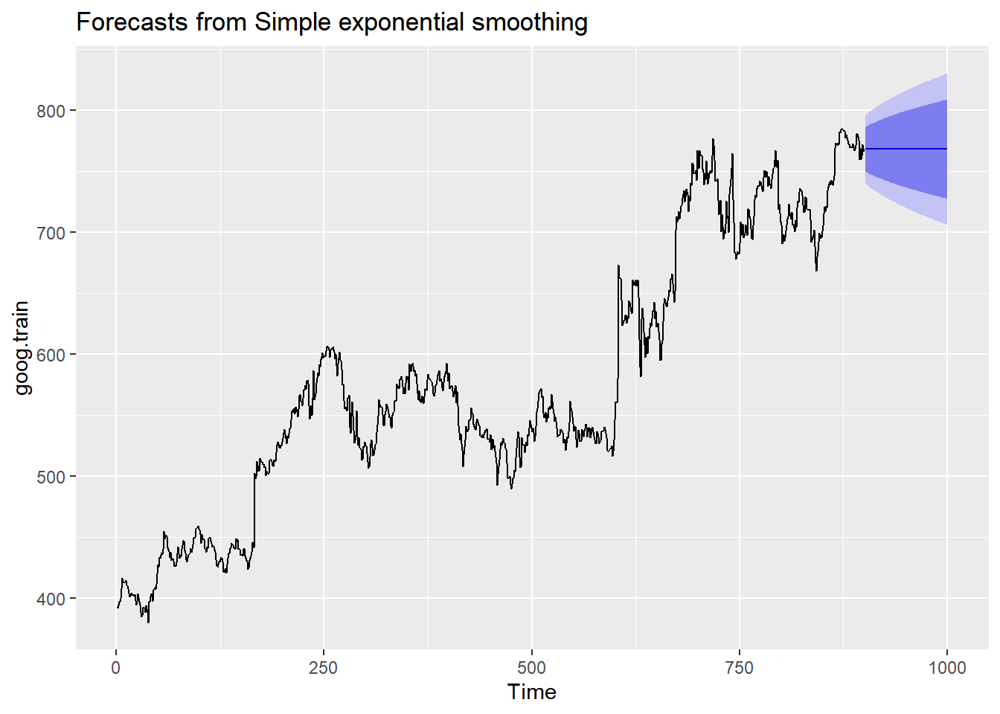
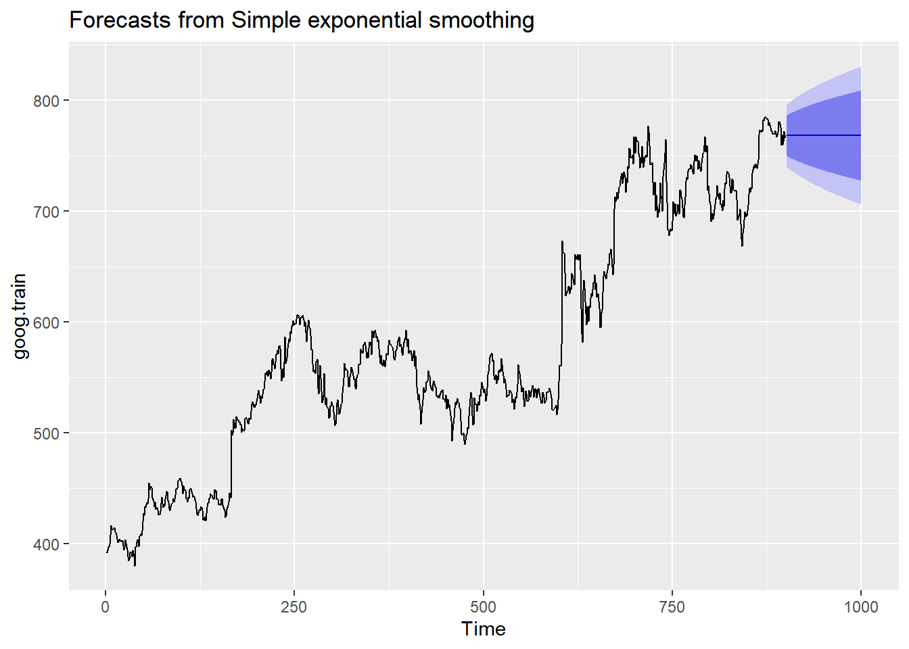
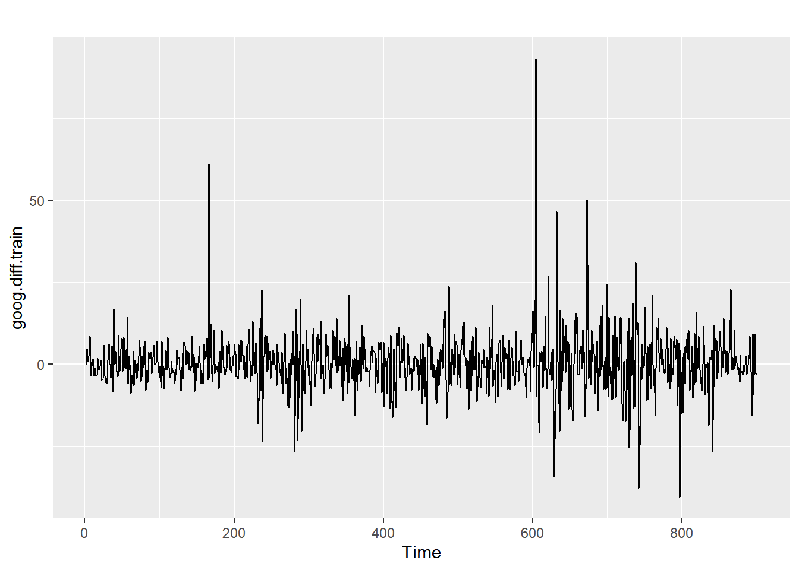
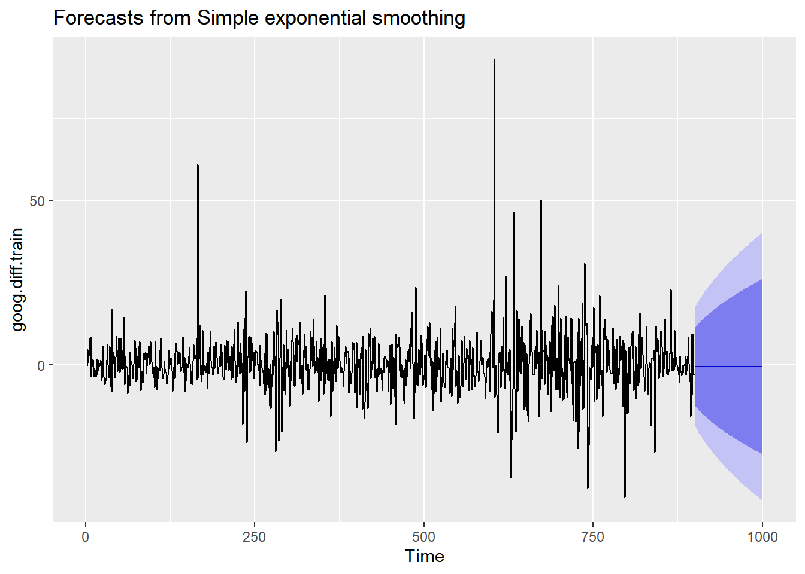
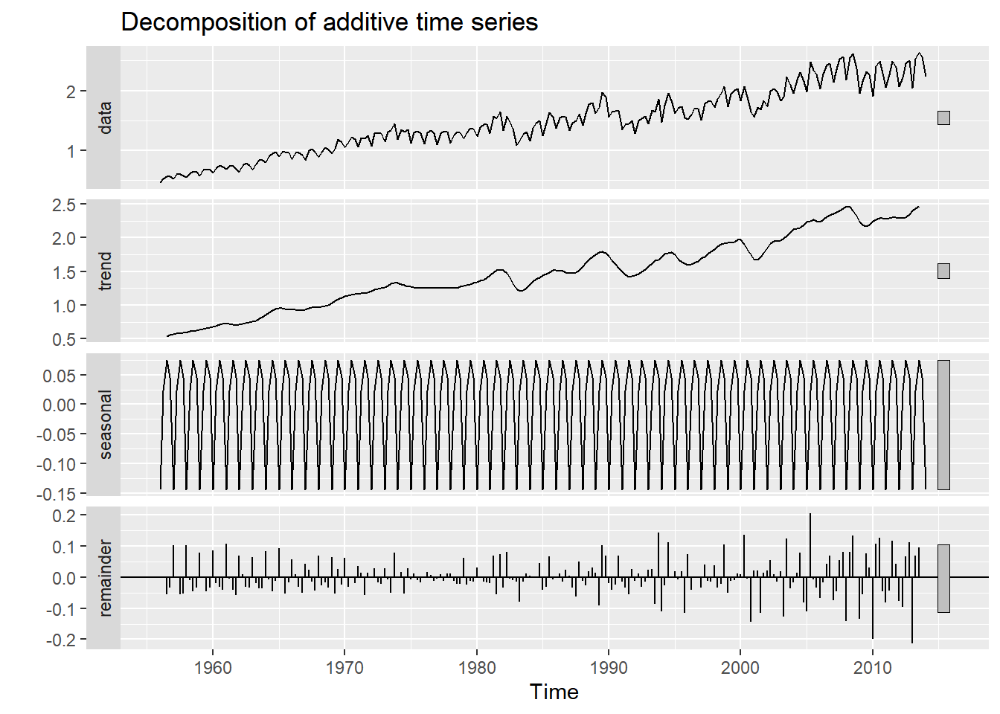
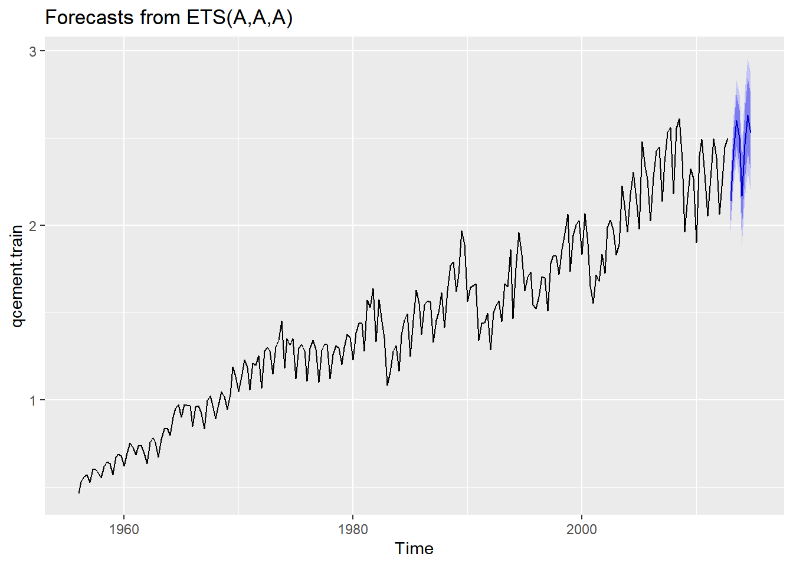
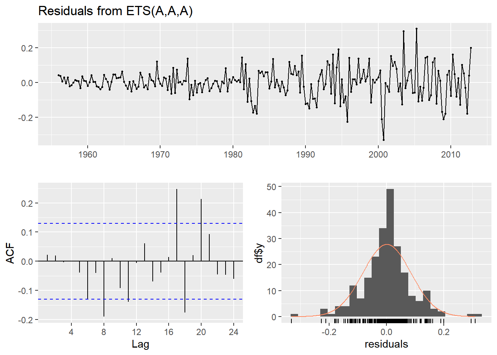

library(tidyverse)
library(fpp2)
goog.train<-window(goog,end=900)
goog.test<-window(goog,start=901)
sesgoog<-ses(goog.train,alpha = .2,h=100)
autoplot(sesgoog)
Techniques of Smoothing Time Series Data
Interpretation of Accuracy function results
Smoothing is a technique of removing noise from a data set. Smoothing in time series is usually done to help see the patterns and trends more easily. For example, in a seasonal data, smoothing out seasonality can be done, so as to see or identify the trend. Sometimes, the term filter is used to describe smoothing procedures.
There are many techniques of smoothing data, however the four most common techniques are; 1. exponential smoothing 2. moving average smoothing 3. double exponential smoothing 4. Holt-winters smoothing technique
There are many types of exponential smoothing depending on trends and seasonality. Here, the exponential functions assign exponentially decreasing weights. That is, greater weights are placed on recent values and lesser weights are placed on older values. In R, we require two packages fpp2 and tidyverse.
Simple Exponential Smoothing is used for data with no trend or seasonality patterns. As mentioned earlier, recent values have more weights than older values. The smoothing parameter or alpha in R determine the weight of each parameter, where 0<α<1. If α is close to zero, it gives more weight to the older values and if α is close to one, it gives more weight to the recent values. in R, we use the ses(), as follows
library(tidyverse)
library(fpp2)
goog.train<-window(goog,end=900)
goog.test<-window(goog,start=901)
sesgoog<-ses(goog.train,alpha = .2,h=100)
autoplot(sesgoog)
The “blue” part shows the Confidence bands for the forecast From the output graph, a straight or flat lined estimate is projected towards the future, hence we can say that it is not capturing the present trend. To correct this, we can use the diff() function to remove the trend from the data as follows.
goog.diff.train<-diff(goog.train)
autoplot(goog.diff.train)
sesgoogdifftrain<-ses(goog.diff.train,alpha = .2,h=100)
autoplot(sesgoogdifftrain)
In order to understand the performance of our model, we need to compare our forecast with our validation or testing data goog.test. Since the goog.train data was differenced we also need to difference the goog.test data and then compare, using the accuracy( x, y) where x is the forecast and y is the actual or the validation data function as follows;
goog.dif.test<-diff(goog.test)
accuracy(sesgoogdifftrain,goog.dif.test) ME RMSE MAE MPE MAPE MASE
Training set -0.01368221 9.317223 6.398819 99.97907 253.7069 0.7572009
Test set 0.97219517 8.141450 6.117483 109.93320 177.9684 0.7239091
ACF1 Theil's U
Training set -0.05440377 NA
Test set 0.12278141 0.9900678The accuracy function gives the following results; 1. Mean Absolute Percentage Error (MAPE) 2. Mean Absolute Error (MAE) 3. Root Mean Square Error (RMSE) 4. Mean Error (ME) 5. Mean Percentage Error (MPE) 6. Mean Absolute Squared Error (MASE) 7. ACF1 :Autocorrelation of errors at lag 1
Root Mean Square Error (RMSE)- is a measure of the differences between values predicted by a model or an estimator and the values observed. It is calculated as :
\(RMSE\)= \(\sqrt\frac{{\Sigma_{i=1}^{N}(x_i - \hat{x_i})^{2}}}{N}\)
where \(x_i\)- Actual observations time series \(\hat{x_i}\) - estimated time series N- number of non-missing data points
If correlation coefficient is one, then the RMSE will be zero. Therefore, the more the RMSE approaches zero, the better the fit, hence you should always aim at minimizing it, where in this case, it can be done by changing the alpha value.
Mean Absolute Error (MAE)-smaller values indicate a better fit and a perfect fit equals to zero. It is usually calculated as MAE=mean(abs(predicted-actual)).
Mean Absolute Percentage Error (MAPE)-smaller values indicate a better fit and a perfect fit equals to zero
Normally, in machine learning, data sets are split into two subsets. The first subset is known as training data. It is a portion of the actual data set that is fed into machine learning model to discover and learn patterns. That is why we used goog.train above. Testing data is used to evaluate the performance of the model, and optimize it for improved results. That is why we used goog.test. The training data should be larger than the test normally 80% and 20% respectively. Here we split the goog data set into two using the window () function. Accuracy function cannot be used with the test data alone, but can used with training data because it “has” the forecasts.
This is a technique that works with data having a trend but no seasonality. Here, the holt() function is used. It uses two smoothing patterns, alpha and beta.
It is used for data with both seasonal patterns and trend. It can be done through additive model or multiplicative model. The additive model is used when the magnitude of the seasonal pattern of data is constant throughout while the multiplicative model is used when the magnitude increases over time. This technique uses three smoothing parameters, alpha, beta and gamma. We use the decompose () function to do this kind of smoothing. Lets work with qcement data.
qcement.train<-window(qcement,end=c(2012,4))
qcement.test<-window(qcement,start=c(2013,1))
##Appling the holt-winters method on qcement
autoplot(decompose(qcement))
Using the ets() we can create an Additive model that deals with error,trend and seasonality. for additive model, we use model-“AAA” function as follows;
qcementets<-ets(qcement.train,model = "AAA")
autoplot(forecast(qcementets))
Now lets check our smoothing parameters as well as the accuracy of the model
summary(qcementets)ETS(A,A,A)
Call:
ets(y = qcement.train, model = "AAA")
Smoothing parameters:
alpha = 0.6418
beta = 1e-04
gamma = 0.1988
Initial states:
l = 0.4511
b = 0.0075
s = 0.0049 0.0307 9e-04 -0.0365
sigma: 0.0854
AIC AICc BIC
126.0419 126.8676 156.9060
Training set error measures:
ME RMSE MAE MPE MAPE MASE
Training set 0.001463693 0.08393279 0.0597683 -0.003454533 3.922727 0.5912949
ACF1
Training set 0.02150539checkresiduals(qcementets)
Ljung-Box test
data: Residuals from ETS(A,A,A)
Q* = 20.288, df = 3, p-value = 0.0001479
Model df: 8. Total lags used: 11#Then lets forecast
qcementforecast<-forecast(qcementets)
#Lets check the Accuracy
accuracy(qcementforecast,qcement.test) ME RMSE MAE MPE MAPE MASE
Training set 0.001463693 0.08393279 0.05976830 -0.003454533 3.922727 0.5912949
Test set 0.031362775 0.07144211 0.06791904 1.115342984 2.899446 0.6719311
ACF1 Theil's U
Training set 0.02150539 NA
Test set -0.31290496 0.2112428For multiplicative case, we use model=“MAM” function.
For simple moving average method, we use the function sma() from the smooth package. SMA does not estimate the parameters.